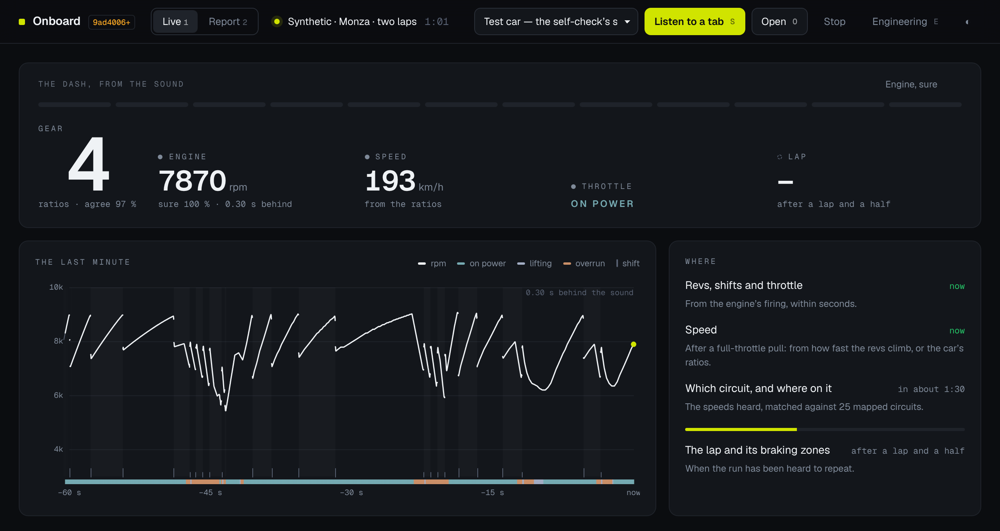
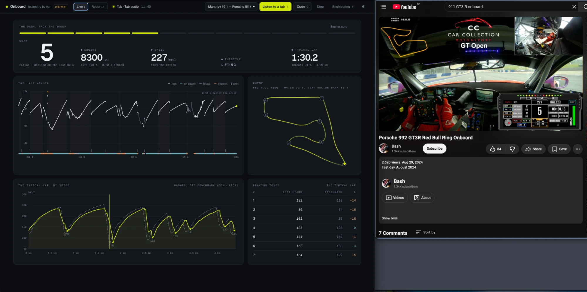

Case study · corgido · October 2026
Telemetry by ear
by-ear reads a race car’s telemetry from the sound of its onboard: the revs, the gear changes, the gear and the speed. It started as a joke about a music visualiser.
On four onboards of a Porsche 911 GT3 R that it hadn’t learned from, it named the gear three times in four, where always guessing the commonest gear manages one in four, and put the speed within 1 to 4 %. This is how it got there in four days, and where it still falls short.
A race car, heard as music
In October I was building music visualisers, toys meant to find out whether anyone on YouTube would watch them before I built anything bigger. The latest, Rhyx, reacts to what it hears rather than to how loud it is, to chords, drum hits and how much the sound is changing. Played the same piece twice with the same settings, it does the same thing. Played something else, it behaves differently, which made me wonder what it would make of a sound that isn’t music.
So I played it a race car’s onboard. It seemed to keep time with the upshifts, and to react to noises that weren’t the engine at all. It would be funny, I thought, if you could get the telemetry out just by listening.
Played a 911 GT3 R’s onboard again later, Rhyx put it at about 125 beats a minute and couldn’t settle on a key, E♭ minor one moment and C♯ major the next. Lined up with the car’s own data, its sense of brightness rose into each of 126 upshifts and fell away after, while its drum detectors barely noticed them. It wasn’t hearing the shifts as beats. The engine was writing the rhythm.
Could you just listen?
It isn’t only a joke. A team’s telemetry comes from sensors on the car, and it should. But a link can drop in the middle of a stint, a series can limit what teams may log or send, and for a rival’s car you never had any. What still reaches everyone is the broadcast, and the engine’s sound is in every onboard.
I’d come at the problem from two sides before. In 2024 I read a console racing game’s screen with text recognition, which worked some of the time. In 2025, for an ASMR project, I sorted an AMG GT3’s eight-hour onboard into idle, braking, acceleration and gear changes by its sound. And PaceBoss, my pace analysis of the same game, rests on 470,618 laps from public league results, with track maps for 25 circuits.
This time an AI coding agent wrote the code. Its first job was a proper screen reader for Assetto Corsa Competizione, which on a console has no telemetry output but shows the gear, speed, revs and pedals in every frame. That made the game the answer key: every recording of my own driving could grade what the sound gave, moment by moment. My share of the labelling came to 33 answers in one evening, mostly which car and circuit each of my streams showed. The recordings stayed on my Mac, and only the numbers read from them came back.
| Source of truth | What it shows | What it settled |
|---|---|---|
| A racing game (Assetto Corsa Competizione) | Gear, speed, revs and pedals on screen in every frame | The method itself: thousands of scored moments, on my own footage and other drivers’ |
| Test sessions driven to a plan | Known regimes, opened by a marker both the sound and the screen carry | Tyre temperatures against the display’s colours; how the engine idles |
| Porsche customer-team onboards | A real car’s speed, gear, throttle and brake drawn over the video | The real car’s gearbox, and the real-car accuracy |
| The organiser’s official timing | Every lap, sector and speed trap of a real race | Laps, and the gear at the speed traps, of a 24-hour race |
Most of my old footage had been recorded to watch back, with nothing noted about how. So I drove new sessions to a plan, each phase opened by three holds on the rev limiter, a marker that shows in the sound and on the screen at once.
Hearing the car, and where it slips
The revs come from the engine’s firing, and the gear changes from how the revs move. Upshifts are the easy part, because the engine drops by a set share of its revs at each one, and it hears 86 to 97 % of them on my console clips. Downshifts are harder than they sound. A race car downshifts hard on the brakes, just when the engine goes quiet and everything else gets loud, the ABS holding the tyres at the limit and a GT3 car’s brakes squealing. The blip that matches the revs to the wheels is there, but buried, and it hears 24 to 43 % of them.
The gear is decided from the revs, the heard shifts and what it knows of the car, and the speed follows from the revs and that gear’s ratio, so the two stand or fall together. When the gear is wrong, it’s usually wrong briefly. Most misses are over within a second, and nine in ten end on the right gear. The long ones are a gear too high through a braking zone where the downshifts weren’t heard, and they make up half the time it’s wrong.

One fault only showed on a real car. At the end of the Nordschleife’s Döttinger Höhe the car reaches top speed and its revs stop moving, and a guard meant to keep music out took that for a held note and blanked the dash. I was watching when it happened, exported the run, and the fix lets an engine that has been moving hold still near the top of its range.
On a real car
by-ear needs a profile of each car before it can read it. Heard without one, its gear count drifts up to seventh and stays there. In the game every profile was learned from my own footage, with the screen as the answer key: how far the revs drop at each upshift, and how hard the car pulls at each speed. The real 911 had no such footage. Its first profile had only the gear ratios, measured from team onboards, and guessed power, mass and drag, and it read the gear one too high in every gear.
So I went looking for real onboards that carry their own answer key. Porsche’s customer teams publish 911 GT3 R onboards with the car’s data drawn on screen. Seventeen were split before any was downloaded, eleven to learn from and six sealed, of which two turned out to carry another production’s overlay, leaving four to test. Learning from the eleven what the game had taught it about its own cars took the gear from right a quarter of the time to three times in four, and it held on the four sealed onboards.
Set side by side at the same circuit, the game’s 992 and the real one mostly agree. Upshifts drop the revs by the same share from second to fourth, and my shift points are within 1 to 2 % of the real drivers’. The game differs in the detail. Its gearbox is a few per cent shorter in the lower gears, and its engine sounds cleaner, more purely six-cylinder, where the real one carries more of the uneven in-between orders.
Check it yourself
The test anyone can repeat is a public one. Car Collection Motorsport’s onboard of their 911 GT3 R at the Red Bull Ring, from a test day in August 2024, is on YouTube with the car’s data drawn on screen. It was one of the eleven onboards the profile learned from, so it shows the tool at its best rather than testing it. On 3 November I played all fourteen minutes into Onboard, the fuller version of this tool, and scored its live dash against the overlay afterwards. The dash had the overlay’s gear 71 % of the time and was within one gear 88 % of the time, where always guessing the commonest gear manages 30 %. Its speed was 1.7 % off at the median, and under 1 % whenever the gear was right.

Watch it beside the video and a few things stand out.
- The dash runs a beat behind. The overlay’s digit changes 0.1 to 0.4 s before a shift can be heard, and the dash shows the gear about 0.3 s after the sound, so for a moment at every shift the two disagree.
- The low gears are weak. Fifth is right 91 % of the time, fourth 83 %, third 66 %, second 45 % and first 36 %. The car reaches the low gears under braking, where downshifts are hardest to hear, and the dash sits a gear too high for a few seconds before it catches up.
- Gear and speed go wrong together, because the speed comes from the gear.
- The shift marks over-count. Some mark changes that didn’t happen, and the dash’s gear filters most of them out.
- The overlay is the team’s display, the best truth on offer, but how it’s made and how often it updates, only they know.
Not yet
- Read a car without a profile, or learn one as it listens. Accuracy is flat after the first minute of a run.
- Time single laps. Its lap times are no better than guessing the average lap.
- Vouch for the real car’s revs. Nothing has checked them against a logger.
- Speak for other cars or conditions. It has heard one game and one real car, only GT3, GT4 and Cup cars, and no wet running.
- Claim a clean test. The sealed onboards were first scored with a fault in place. That score is recorded, with every one since.
Four days
The code took four days, from 21 to 25 October 2026, and that surprised me more than anything it measured. The agent alone doesn’t explain it. It was building on a year of my own groundwork, the earlier screen reader, the onboard sound projects, months of recorded driving, and PaceBoss, whose laps, results and track maps answered questions the project would otherwise have had to stop and ask. Most of the speed came from knowing what to measure, and where the truth already was.
That is the whole method. Move the problem to where the truth is visible, keep a record of the conditions of every observation, and build fast. Checking it afterwards then means rerunning, not reconstructing: on 3 November two agents re-derived every headline number here from the raw traces in an afternoon, and the figures they couldn’t confirm were corrected.
Every test is written up in the project’s record, with the script and the data behind each number; most of it is the agent’s account and is labelled that way. What it needs next is something I can’t get on my own: a car’s own logger running beside its onboard for a race weekend. That would check the revs, which nothing has yet, and show how far listening can stand in when the link goes.